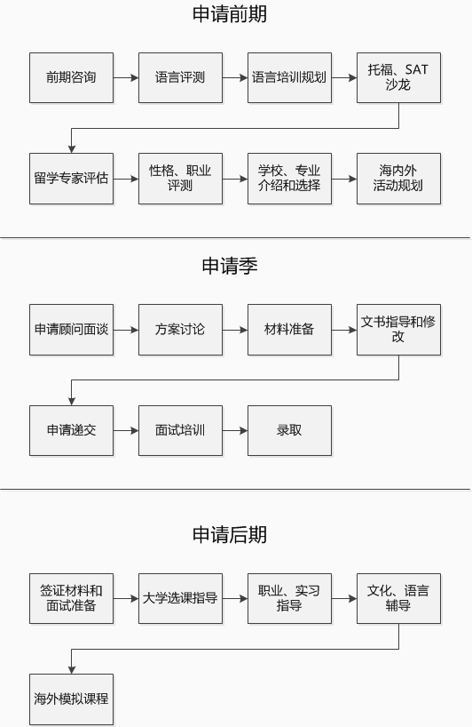

服务明细
申请服务简述（2015年9月入学）
全程会按照学生个体需求进行设计
*SAT辅导老师100%为职业外籍教师；职业规划团队100%来自海外各行业精英；文书专家团队100%毕业于常青藤大学（第一学历）。
背景和能力提升服务（建议尽早准备）
丰富课外活动，培养思维逻辑能力、沟通表达能力、组织协调领导能力，研究分析能力和社会责任心，积累文书 素材，提高英文听说读写能力
大型/固定活动
校内外学生组织、公益活动、研究课题
假期/不定期活动
校际比赛，暑期实践、志愿者活动、社会课题调查、海外交流、名校夏令营
美籍名校顾问文书写作辅导，名著赏析，面谈教授申请经验
类校外活动单项
创业大赛，美国商会，领袖峰会，模拟联合国，公益组织，科学实验室实习